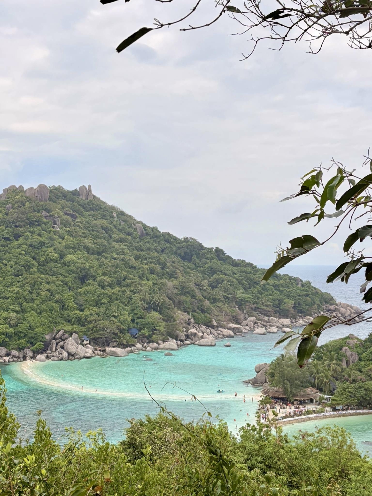

The Experience
Three islands, one escape
Thailand's islands have a way of making you slow down.
We spent time across Koh Samui, Koh Tao and Koh Phangan,
and each island had its own personality. Some days were
about finding a beautiful beach and staying there for
hours. Others were about getting out on the water,
exploring the coastline or simply finding somewhere
relaxed for lunch.
We stayed in a selection of hotels along the way. Each
gave us a different base for island life, but the common
theme was the same — somewhere comfortable to come back
to after a day in the sun.
The best part was not having to do too much. A beach,
warm water, a good lunch and nowhere particular to be
was often enough.
